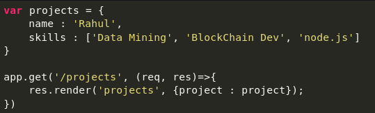
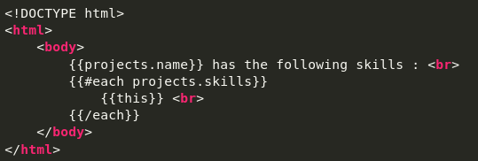

Handlebars.js is a templating engine similar to the ejs module in node.js, but more powerful and simple to use. It ensures minimum templating and is a logicless engine that keeps the view and the code separated. It can be used with express as the hbs module, available through npm. HandleBars can be used to render web pages to the client side from data on the server-side
Let’s take an example, add the following code to your index.js and run the server and get a response.
where out views/projects.hbs looks something like:
